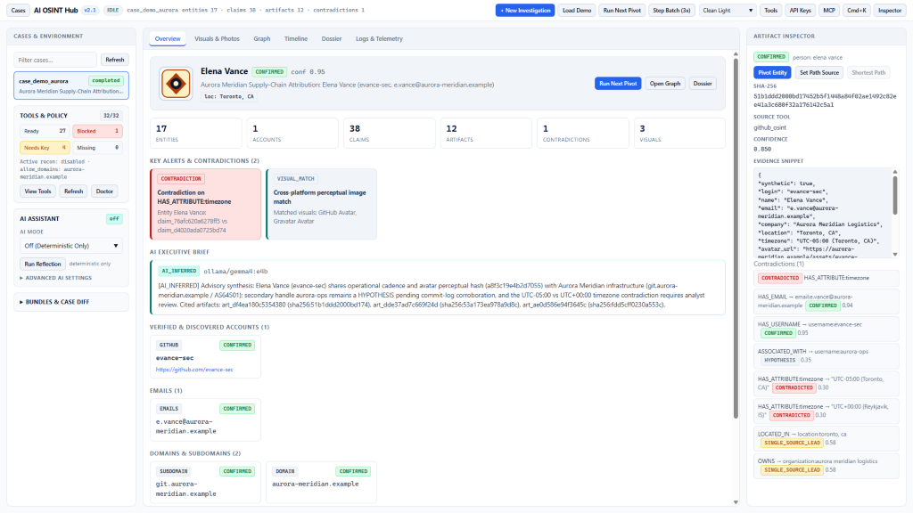
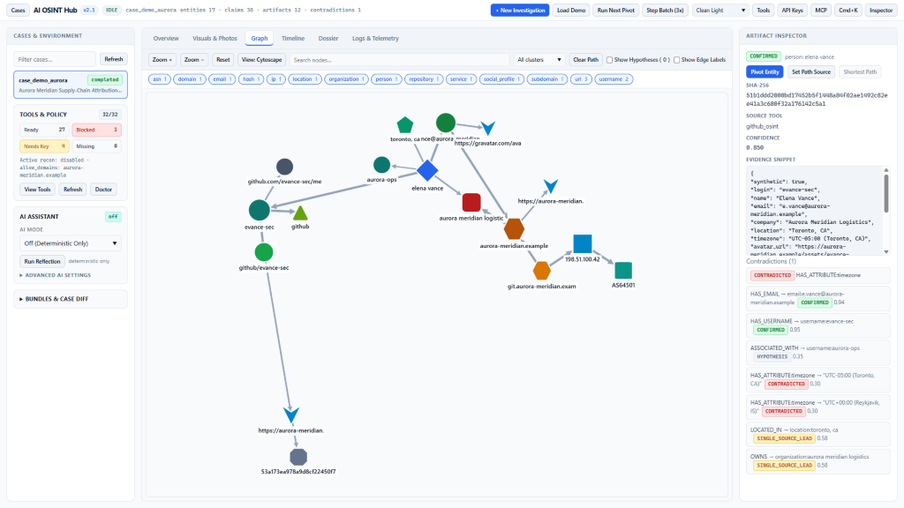
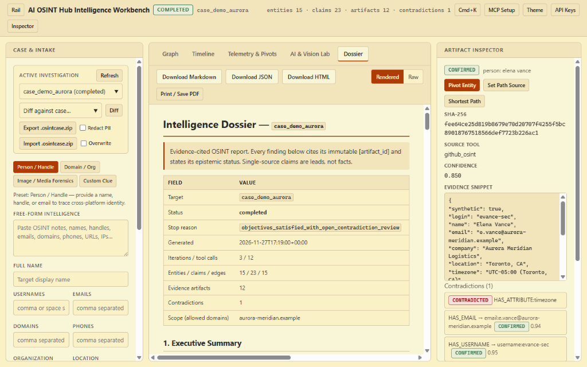

AI OSINT Hub v2.1 — Evidence-Backed OSINT & Attribution Engine
Built for Real Analyst Work — Zero Bloatware
Separates deterministic intelligence collection (SQLite WAL Knowledge Graph + SHA-256 raw evidence) from strictly optional, quarantined AI inside a calm, responsive 4-theme workbench.
- Every non-hypothesis claim cites an immutable
EvidenceArtifact& closed 6-state status. - Automatic Visual Forensics: SSRF-safe avatar/favicon harvesting + EXIF & 64-bit
pHash/dHashcorrelation. - Full Parity: Web Workbench, CLI, Stdio MCP App, HTML/PDF Dossiers & signed
.osintcase.zipbundles.

Why Typical OSINT Scripts & "AI Wrappers" Fail in Enterprise SOCs
1. CLI Sprawl & False Positives Noise
Analysts manually run 15+ disconnected tools (sherlock, maigret, holehe, theHarvester, rdap) and drown in false leads:
- Generic URLs (
/members,/login) parsed as fake usernames. - GitHub bots (
web-flow,dependabot[bot]) polluting committers. - Seed person & discovered GitHub handle split into separate nodes.
- Multiple valid emails falsely marked "contradicted".
2. Hallucinating AI Wrappers Unverifiable
Piping raw web scrapes into an LLM produces fluent reports that collapse under forensic or client scrutiny:
- Invented social accounts and unverified attribution leaps.
- Zero raw output
SHA-256hashes or artifact citations. - Indirect prompt injection hidden in target bios or EXIF tags.
- 100 confusing LLM tuning knobs instead of working defaults.
3. OPSEC, SSRF & Scope Hazards Risk
Unconstrained crawlers put the investigating team's own workstation and client scope at risk:
- HTTP 302 redirects pivoting into
127.0.0.1or169.254.169.254. - Malicious SVG avatars / HTML payloads triggering stored XSS.
- API keys echoed into terminal logs or exported case archives.
- Intrusive brute-forcers (
hydra) accidentally triggered.
tests/
5-Stage Deterministic Pipeline & Shared Service Parity
Transactional Iteration Guarantee
One engine step = one SQLite transaction persisting raw artifact hash, claims, contradictions, ledger status, and IterationRecord atomically.
Duplicate-Execution Ledger
try_claim_execution(tool_id, param_hash) prevents redundant runs and guarantees re-running one tool never inflates multi-source corroboration.
Seed-First Autonomous Pivoting
Uncovered user seeds receive priority round-robin coverage before speculative permutations; fast passive lookups outrank slow crawlers.
hub/models.py & hub/tools/capabilities.py
State isolated in $AI_OSINT_HUB_HOME (never inside repo)
Closed 6-State Truth Model & Real-World Accuracy Fixes
| Epistemic Status | Deterministic Rule (confidence.py) | Score |
|---|---|---|
| CONFIRMED | ≥ 2 independent direct tools & score ≥ 0.90 (or primary seed) | 0.90–0.99 |
| CORROBORATED | ≥ 2 independent source_tools (base 0.85 + reliability bonus) |
0.85–0.99 |
| SINGLE_SOURCE_LEAD | 1 external tool: min(0.65, 0.10 + 0.60 × reliability) |
≤ 0.65 |
| HYPOTHESIS | Intake/planner candidate (e.g., transliterated handle) | ≤ 0.35 |
| CONTRADICTED | Conflicting values on a functional predicate (e.g., timezone/phone) | 0.30 |
| COLLECTION_FAILURE | Timeout, rate-limit, auth gap, or missing binary in ledger | 0.00 |
Multi-Valued HAS_EMAIL & LOCATED_IN
People own personal, corporate, and commit emails simultaneously. HAS_EMAIL is non-functional — enriching the profile without triggering fake contradictions, while HAS_PHONE & timezone still catch real conflicts.
Automatic Person Unification (_unify_duplicate_persons)
Merges duplicate PERSON nodes when they share a verified unique handle or non-role email — linking repositories, domains, and avatars onto one subject.
Infrastructure Tagging & Bot / Generic-Path Filters
Tags gmail.com & *@users.noreply.github.com as provider_infrastructure=True; rejects /members, /profile, /login false-positive handles and web-flow / *[bot] committers.
Subject Overview & Automatic Cross-Platform Visual Forensics
17 entities · 38 claims · 12 artifacts, verified evance-sec GitHub account, aurora-meridian.example infra, and automatic Timezone Contradiction Alert (UTC-05:00 vs PGP UTC+00:00).

aurora_github.png ↔ aurora_gravatar.png via perceptual hash (a8f3c19e4b2d7055) even when SHA-256 & EXIF Software headers differ, plus 1-click local forensic image upload.
avatar_url, Gravatar d=404, og:image, and site favicons
hub/tools/visual_harvester.py
Entity-Resolved Graph, 4 Enterprise Themes & Client Dossiers


[artifact_id], preserves a Collection Gaps audit section, and exports portable .osintcase.zip archives with optional --redact-pii.
Clean Light (Default Linear/Stripe Slate) · Warm Paper · Midnight Slate (24/7 SOC Dark) · Gruvbox Dark
Any Viewport
cytoscape.min.js — zero external CDN requests at runtime
hub/web.py · hub/reporting.py · hub/bundle.py
32-Tool Capability Matrix & Cross-Platform Locator
| Posture Tier | Count | Registered Capabilities (hub/tools/capabilities.py) |
|---|---|---|
| Python-Native Passive | 15 | dns_lookup, http_headers, tls_cert, crtsh_lookup, asn_bgp_lookup, favicon_hash, media_forensics, photon_crawler, github_osint, gravatar_lookup, pgp_keyserver, rdap_lookup, wayback_cdx, darkweb_ahmia, snscrape |
| Credentialed APIs | 4 | virustotal_lookup, shodan_lookup, censys_lookup (Platform v3), hunter_lookup 24h Cooldown + Redaction |
| Managed Passive CLIs | 7 | theharvester, sherlock, maigret, holehe, phoneinfoga, ghunt, h8mail Isolated .toolhome |
| Active / Auth-Gated | 5 | nmap, amass, gobuster, whatweb, hashcat Off unless allow_active_recon=True |
| Intrusive Policy Blocked | 1 | hydra INTRUSIVE_BLOCKED · Shown Honestly as BLOCKED |
6-Step Deterministic Locator
Managed descriptors → ~/.ai_osint_hub/bin → .venv* entry-points → host PATH → shell-free wsl.exe -d Ubuntu --exec → Python wrapper.
Rate-Limit Resilience
rate_limit_cache.json puts throttled APIs on a 24h cooldown and passes blocked_tool_ids so pivots never loop on 401/429 errors.
Secret Vault Hygiene
API keys live in $AI_OSINT_HUB_HOME/credentials.json and are scrubbed ([REDACTED]) from stdout, stderr, SQLite, and UI payloads.
Code-Enforced Security Against Adversarial Targets
1. Zero-Shell Subprocess Isolation
asyncio.create_subprocess_exec(*argv, stdin=DEVNULL)— nevershell=Trueorbash -lc.- Rejects
.cmd/.bat/.ps1script wrappers in locator. - Minimal allowlisted env + hard process-tree kill on timeout (
taskkill /F /T/os.killpg).
2. Redirect-Aware SSRF Armor (fetch_safe)
- Resolves DNS A/AAAA records before connecting and re-validates every HTTP 30x hop.
- Blocks loopback (
127.0.0.0/8,::1), RFC 1918 private ranges, and cloud metadata (169.254.169.254). - DNS lookup failures fail closed immediately.
3. Media Harvesting & Zero-XSS UI
- 5 MB streaming cap, 8s timeout, Pillow pixel decode check, and total SVG/HTML rejection.
- Served via strict basename check +
X-Content-Type-Options: nosniff. - UI & HTML dossiers use
createElement/textContent— zeroinnerHTMLoreval.
4. Quarantine & .osintcase.zip Verification
- External text & EXIF wrapped in
<untrusted_osint_data>&<untrusted_visual_data>. - Bundle importer blocks Zip-Slip (
.., symlinks), zip bombs (size & ratio caps), and SHA-256 mismatches. - Imported SQLite checked with
PRAGMA trusted_schema = OFF+integrity_check.
SECURITY.md
hub/security/{policy,quarantine,redaction}.py
Simple, Useful AI — 4 Clear Modes, Zero Knob Clutter
1 · Off (Default)
0 Dependencies100% deterministic OSINT engine, ERKG person merge, EXIF extraction, and 64-bit pHash/dHash photo matching.
2 · Local ONNX
.[local-ai]fastembed ONNX Runtime (bge-small-en-v1.5 + CLIP ViT-B-32). Semantic alias & visual similarity offline — no Ollama or GPU needed.
3 · Local Ollama
Air-GappedConnects to on-prem Ollama / LM Studio (gemma4, qwen2.5vl) for private contradiction triage & executive briefs.
4 · Cloud BYOK
RedactedOptional Gemini, DeepSeek, or OpenAI-compatible synthesis with automatic secret scrubbing & untrusted-tag isolation.
Non-Negotiable Epistemic Guardrail: AI Assists, Never Testifies Alone
Every model output carries PROVENANCE_AI_INFERRED (direct=False, confidence capped at ≤ 0.35 for text reflection and ≤ 0.45 for visual correlation). Because CONFIRMED requires all(s.direct) and ≥ 2 deterministic tools, an LLM can never fabricate or promote a confirmed fact.
num_ctx, keep_alive, URLs) stay tucked away unless requested
hub/ai/{models,embeddings,reflection_runner}.py
4-Minute Live Demo Playbook
Step 1 · Policy Rail
Show 32/32 tools: Ready, Needs Key, and hydra honestly flagged Blocked 1 with Active recon: disabled.
Step 2 · Overview
Inspect Elena Vance (evance-sec), infrastructure domains, and the automatic Timezone Contradiction alert.
Step 3 · Visual pHash
Open Visuals & Photos to show the 100% pHash match linking her GitHub & Gravatar avatars + EXIF tags.
Step 4 · Graph & Export
Trace shortest path to AS64501, verify raw SHA-256 in the Inspector, switch themes, and export HTML dossier.
case_demo_aurora; live passive run ready for any authorized domain
hub/cli.py · hub/demo.py
Direct Operational Value for PROSOL QSC Teams
| PROSOL Practice Area | Typical Investigation Bottleneck | What AI OSINT Hub v2.1 Delivers |
|---|---|---|
| Cyber Threat Intelligence (CTI) | 3–4 hours stitching handles, commit emails, PGP keys, CT logs, and ASNs by hand. | Autonomous pivot loop correlates identity + infrastructure + avatar pHash in ~90s with SHA-256 artifact citations. |
| 24/7 SOC & Incident Response (DFIR) | Sharing external enrichment across L1→L3 shifts or air-gapped banking environments. | Runs 100% offline/on-prem; exports SHA-256 verified .osintcase.zip bundles with --redact-pii and case diffing. |
| Red Team & Security Assessments | Keeping external pre-engagement recon strictly passive and within authorized client domains. | Code-enforced allow_domains lock, allow_active_recon=False default, hydra blocked, and full execution ledger audit trail. |
| Executive & Client Reporting | Reformatting raw JSON into clean executive briefings for CISO / government stakeholders. | One-click print-ready HTML/PDF dossiers separating CONFIRMED facts from SINGLE_SOURCE_LEADs & Collection Gaps. |
050/051/055/070/077 → +994 E.164), diacritic transliteration, and multi-label suffix handling (.edu.az, .gov.az, .org.az).
.az Ready
Engineering Proof & Anticipated Technical Q&A
Verified Production Engineering
- 745 Offline Pytest Checks Passing: Deterministic mock registry — zero flaky live-network dependencies in CI.
- 7/7 GitHub Actions Matrix: Ubuntu, Windows & macOS across Python
3.11&3.13+ non-root (UID 10001) Docker build. - 32/32 Toolchain Health: Windows 11 + shell-free WSL2 Ubuntu bridge verified via
hub.cli doctor. - Security Audited: 0 Critical / 0 High findings across runtime, visual harvester, Web DOM, and bundle importer.
What I Bring to PROSOL on Day One
Systems-level Python & security engineering, threat-intelligence mindset, strict defensive boundaries, and the discipline to ship clean, tested tools analysts actually enjoy using.
Q: "Why build this instead of Maltego or SpiderFoot?"
Maltego is manual and license-locked; SpiderFoot floods analysts with uncorroborated single-source noise. AI OSINT Hub enforces a mathematical 6-state ERKG, deduplicates identities, correlates avatar pHashes, and exposes CLI + Web + MCP parity.
Q: "How do you protect investigator OPSEC?"
Default passive collectors query public third-party indices (crt.sh, RDAP, Wayback, OpenPGP) rather than target servers, and centralized httpx transport routes cleanly through corporate proxies/VPNs.
Q: "Can adversarial bios or EXIF hijack the engine?"
No: core resolution is 100% deterministic code (zero LLM in control flow), UI uses textContent only, and optional AI sees sanitized <untrusted_*> blocks that cannot promote claims.